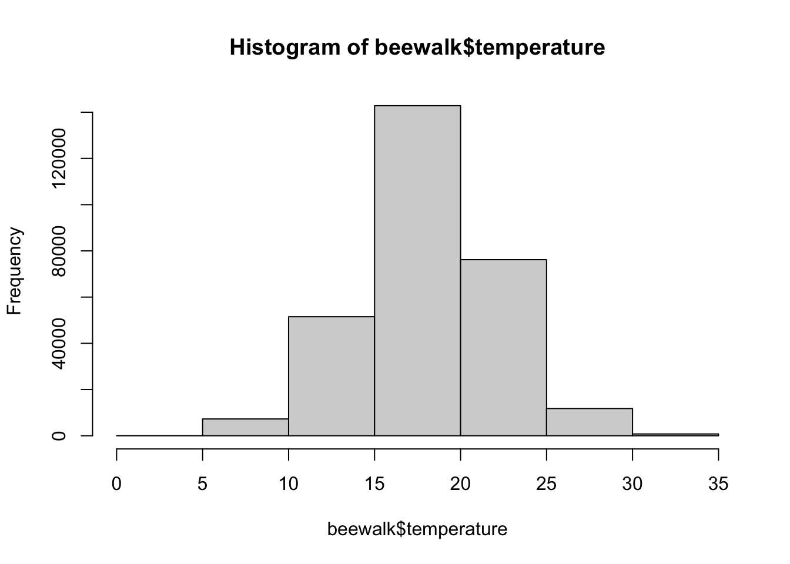

A standard normal distribution is a mathematical model that describes a commonly observed phenomenon in nature. When measuring many different kinds of datasets, the data being measured often becomes something that resembles a standard normal distribution. This distribution is described by the following equation:
This equation is fairly well defined by the variance (\(\sigma^2\)), the overall spread of the data, and by the standard deviation (\(\sigma\)), which is defined by the square root of the variance.
A standard normal distribution, illustrating the percentage of area found within each standard deviation away from the mean. By Ainali on Wikipedia; CC-BY-SA 3.0.
Standard normal distributions have a mean, median, and mode that are equal. The standard normal distribution is a density function, and we are interested in the “area under the curve” (AUC) to understand the relative probability of an event occurring. At the mean/median/mode, the probability on either side of the distribution is \(50\)%. When looking at a normal distribution distribution, it is impossible to say the probability of a specific event occurring, but it is possible to state the probability of an event as extreme or more extreme than the event observed occurring. This is known as the \(p\) value.
4.1.1 Example in nature
In order to see an example of the normal distribution in nature, we are going to examine the BeeWalk survey database from the island of Great Britain (Comont 2020). We are not interested in the bee data at present, however, but in the climatic data from when the surveys were performed.
Rows: 306550 Columns: 49
── Column specification ────────────────────────────────────────────────────────
Delimiter: ","
chr (30): Website.ID, Website.RecordKey, SiteName, Site.section, ViceCounty,...
dbl (19): RecordKey, established, Precision, Transect.lat, Transect.long, tr...
ℹ Use `spec()` to retrieve the full column specification for this data.
ℹ Specify the column types or set `show_col_types = FALSE` to quiet this message.
Note that this is another massive dataset - \(306,550\) rows of data!
We are specifically interested in temperature to determine weather conditions. Let’s see what the mean of this variable is.
mean(beewalk$temperature)
[1] NA
Hmmm… we are getting an NA value, indicating that not every cell has data recorded. Let’s view summary.
summary(beewalk$temperature)
Min. 1st Qu. Median Mean 3rd Qu. Max. NA's
0.00 16.00 19.00 18.65 21.00 35.00 16151
As we can see, \(16,151\) rows do not have temperature recorded! We want to remove these NA rows, which we can do by using using na.omit.
beewalk$temperature %>%na.omit() %>%mean() %>%round(2) # don't forget to round!
[1] 18.65
Now we can record the mean.
Let’s visualize these data using a histogram. Note I do not use na.omit as the hist function automatically performs this data-cleaning step!
hist(beewalk$temperature,breaks =5)

Even with only five breaks, we can see an interesting, normal-esque distribution in the data. Let’s refine the bin number.
hist(beewalk$temperature,breaks =40)
With forty breaks, the pattern becomes even more clear. Let’s see what a standard normal distribution around these data would look like.
# save temperature vector without NA valuestemps <- beewalk$temperature %>%na.omit()mu <-mean(temps)t.sd <-sd(temps)# sample random valuesnormal.temps <-rnorm(length(temps), # sample same size vectormean = mu,sd = t.sd)hist(normal.temps, breaks =40)
As we can see, our normal approximation of temperatures is not too dissimilar from the distribution of temperatures we actually see!
Let’s see what kind of data we have for temperatures:
Oftentimes, we will see things approach the normal distribution as we collect more samples. We can model this by subsampling our temperature vector.
sub.temps <-sample(temps,size =10,replace =FALSE)hist(sub.temps, main ="10 samples")
With only ten values sampled, we do not have much of a normal distribution. Let’s up this to \(100\) samples.
sub.temps <-sample(temps,size =100,replace =FALSE)hist(sub.temps, main ="100 samples",breaks =10)
Now we are starting to see more of a normal distribution! Let’s increase this to \(1000\) temperatures.
sub.temps <-sample(temps,size =1000,replace =FALSE)hist(sub.temps, main ="1000 samples", breaks =40)
Now the normal distribution is even more clear. As we can also see, the more we sample, the more we approach the true means and distribution of the actual dataset. Because of this, we can perform experiments and observations of small groups and subsamples and make inferences about the whole, given that most systems naturally approach statistical distributions like the normal!
4.2 Hypothesis testing
Since we can define specific areas under the curve within these distributions, we can look at the percentage of area within a certain bound to determine how likely a specific outcome would be. Thus, we can begin to test what the probability of observing an event is within a theoretical, probabilistic space. A couple of important conceptual ideas:
We may not be able to know the probability of a specific event, but we can figure out the probability of events more extreme or less extreme as that event
If the most likely result is the mean, then the further we move away from the mean, the less likely an event becomes.
If we look away from the mean at a certain point, then the area represents the chances of getting a result as extreme or more extreme than what we observe. This probability is known as the \(p\) value.
Once we have a \(p\) value, we can make statements about the event that we’ve seen relative to the overall nature of the dataset, but we do not have sufficient information to declare if this result is statistically significant.
4.2.1 Critical Values - \(\alpha\)
In order to determine if something is significant, we compare things to a critical value, known as \(\alpha\). This value is traditionally defined as \(0.05\), essentially stating that we deem an event as significant if \(5\)% or fewer of observed or predicted events are as extreme or more extreme than what we observe.
Your value should always set your\(\alpha\)critical value before you do your experiments and analyses.
4.2.2 Visualizing a \(p\) value
Let’s say that we are looking at a dataset defined by a standard normal distribution with \(\mu=0\) and \(\sigma=1\). We draw a random value, \(x\), with \(x=1.6\). What is the probability of drawing a number this extreme or more extreme from the dataset?
First, let’s visualize this distribution:
###THIS WILL TAKE A WHILE TO RUN#### create gigantic normal distribution dataset# will be essentially normal for plotting# rnorm gets random valuesx <-rnorm(100000000)# convert to data framex <-as.data.frame(x)# rename columncolnames(x) <-c("values")# thank you stack overflow for the following# Creating density plotp =ggplot(x, aes(x = values) ) +# generic density plot, no fillgeom_density(fill="lightblue")# Building shaded area# create new plot objectp2 <- p +# add previous step as a "backbone"# rename axesgeom_vline(xintercept =1.6) +xlab("Test Statistic") +ylab("Frequency (Probability)") +# make it neat and tidytheme_classic()# plot it# can use ggsave function to saveplot(p2)
Above, the solid black line represents \(x\), with the illustrated standard normal distribution being filled in blue.
Let’s see how much of the area represents values as extreme or more extreme as our value \(x\).
### THIS WILL TAKE A WHILE TO RUN #### Getting the values of plot# something I wasn't familiar with before making this!d <-ggplot_build(p)$data[[1]]# Building shaded area# create new plot objectp2 <- p +# add previous step as a "backbone"# add new shaded areageom_area(data =subset(d, x <1.6), # select area# define color, shading intensity, etc.aes(x=x,y=y), fill ="white", alpha =1) +# add value linegeom_vline(xintercept =1.6, colour ="black", linetype ="dashed",linewidth =1) +# rename axesxlab("Test Statistic") +ylab("Frequency (Probability)") +# make it neat and tidytheme_classic()# plot it# can use ggsave function to saveplot(p2)
Now we can see that it is only a portion of the distribution that is within our \(p\) value, but we don’t know exactly what this area is! We can find out in one of two ways.
4.2.3 Calculating a \(p\) value
We have two different methods for calculating a \(p\) value:
4.2.3.1 Comparing to a \(z\) table
We can compare the \(z\) value we calculate to a \(z\) table, such as the one at ztable.net. On this webpage, you can scroll and find tables for positive and negative \(z\) scores. Note that normal distributions are symmetrical, so you can also transform from negative to positive to get an idea of the area as well. Given that a normal distribution is centered at \(0\), a \(z\) score of \(0\) will have a \(p\) value of \(0.50\).
On the \(z\) tables, you will find the tenths place for your decimal in the rows, and then go across to the columns for the hundredths place. For example, go to the website and find the \(p\) value for a \(z\) score of \(-1.33\). You should find the cell marked \(0.09176\). Note the website uses naked decimals, which we do not use in this class.
For values that aren’t on the \(z\) table, we can approximate its position between different points on the \(z\) table or, if it is extremely unlikely, denote that \(p < 0.0001\).
4.2.3.2 Using R
In R, we can calculate a \(p\) value using the function pnorm. This function uses the arguments of p for our \(p\) value, mean for the mean of our distribution, sd for the standard deviation of our distribution, and also information on whether we want to log-transform \(p\) or if we are testing a specific hypothesis (lower tail, upper tail, or two-tailed). The function pnorm defaults to a standard normal distribution, which would be a \(z\) score, but it can also perform the \(z\) transformations for us if we define the mean and standard deviation.
For example, if we have a \(z\) score of \(-1.33\):
pnorm(-1.33)
[1] 0.09175914
As we can see, we get the same result as our \(z\) table, just with more precision!
There are other functions in this family as well in R, including dnorm for quantiles, qnorm for determining the \(z\) score for a specific \(p\) value, and rnorm for getting random values from a normal distribution with specific dimensions. For now, we will focus on pnorm.
4.3 Homework: Chapter 8
Please complete problems 8.1, 8.2, 8.3 & 8.6. Follow the directions as written in the book. Submit one html file, as derived from RStudio. For maximum clarity, create headings to separate your problems. (Remember, a header can be invoked by placing ‘#’ in front of a line of text. For example: the header here is written as # Homework: Chapter 8).